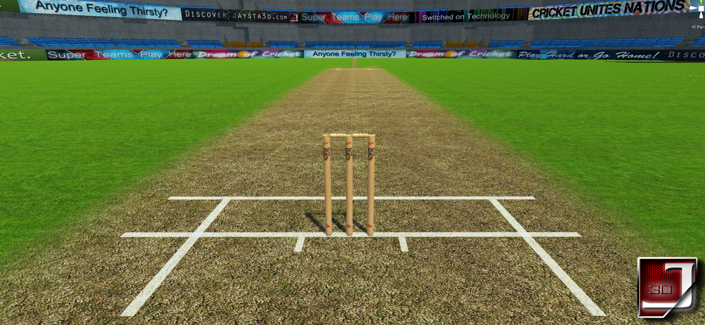

Welcome/Bienvenue to the World's first underwater cricket stadium . With the capacity of about 20,000 people , the stadium will witnes
its first match on 8 august which will be played between Kings X1 punjab and Delhi daredevils. One of the major highlights of the stadium is the suspended crossbar
roofs. The Glass roof is Thick and lighter in weight and Water resistant. There is beam support for the roof to ensure that the spectators will have a
better view. On the roof there are big tube structures which allow ventilation and allow the breeze from the top to flow in.
The stadium has 10 elevators for east and west which go through hollow tubes all the way down to stadium . The Pitch of the stadium is prepared with black
soil which ensures consistence spin and bounce .
Dive into the world of new possibilities with the aquaturf cricket stadium .Aquaturf Cricket Stadium Is world's First underwater cricket stadium .So Going and watching a crciket match below water is an adventure in itself.
Whether you come to a match, go on a stadium tour or attend an event, the rich atmosphere of Stadium will charm you and capture your heart forever.
It is argubly the most beatifull cricket stadium on Earth . Aquaturf is so certainly, in the popular imagination, the most beautiful cricket ground in the
world that one half hopes to disagree but honestly one cannot. The pavilion is full of flowers, the stands painted the green .
From every other position Water flowing above the Stadium dominates the eye.
UPCOMING EVENTS
There are numerous events that are already planned in this coming Year . Few of them are :
FIRST PREMEIRE UNDERWATER LEAGUE
Total 8 teams will take part in this tournament . The players for the teams are already bought . Lots of young and fresh talent will be there
FIRST UNDERWATER WORLD CUP 2019
The Most awaited world cup 2019 Will also be hosted here . Other info will be posted soon.
ASHES TROPHY
The historical ashes trophy will be played underwater for the very first time
CHARITY MATCH
Not only Cricket , Football match will be also played here to raise charity for cancer foundations . The date is not fixed yet but it
will be probably held in starting winters.
OTHER ADVENTURES
Along with sports there are some other things that you can enjoy when you will visit the stadium
GALLERY
There is an Art gallery about the journey of cricket and its history . Documentaries are also played about the life and journey of legendry crickters.
Clients are able to view paintings in situ and, seeing fine art hanging over an abandoned coffee cup or the odd half chewed sneaker
— the pervasive art of domestic life — seemed to make visitors immediately at ease with the paintings and able imaginatively to transmit
them to their own houses. Consequently, this feeling of seeing art hang “at home” is a concept rooted in the design of her galleries,
and each has the welcoming feeling of a furnished house rather than the more traditional spare, minimalistc design of most galleries.
LIVE AQAURIUM
Witness the world's biggest live aqaurium . It connects you stariaght to the nature and feel your connection with the ocean . You can probably see every
sea creature if you spent some time here .
HISTORY!!

Cricket has a rich history dating back in 17th century .
In 1788, the first official laws of cricket were written, and terms like middle stump and lbw were coined. The Marylebone Cricket Club (MCC) was the first cricket team,
and they played on the Lord’s field in England. In 1793, the first recorded game of cricket was played at the Lord’s ground.
International games, or professional cricket matches, played by one country against another country; have been happening since 1844. Cricket was introduced to North
America by the English colonies. The British India Company’s invasion over India had brought cricket to India and its neighboring countries. For further
reference about history . Click here
RECORDS
TOP WORLD RECORDS
Don Bradman's 99.94 Test Career Batting Average
Muttiah Muralitharan's 1347 International Wickets
Australia's 16 Consecutive Test Wins
Chaminda Vaas' One Day International Bowling Figures of 8/19
Graham Gooch's 456 Runs in a Test Match
Phil Simmons' Economy Rate of 0.3 in a One Day International
Kings X1 punjab vs Delhi Daredevils (TO BE PLAYED) Super kings vs Knight Riders(TO BE PLAYED)
CONTACT US !!
For any queries Contact us at: Email: Aquaturf@hotmail.com Phone number: 45683889298 Follow us on Facebook : Aquastadium324/facebook.com
Follow us on Twitter:AQ32
CREATE YOUR ACCOUNT
Join Our Community Today
HOW TO LOCATE US ??
We are located just at the port of andaman and nicobar islands at ross island close to the airport